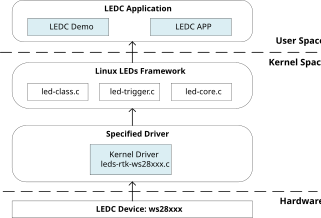
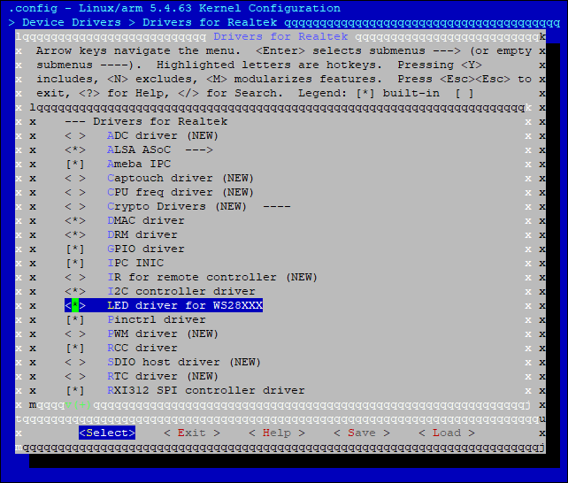

LEDC is used to control external Intelligent LED lamps, like WS2812B. LEDC supports DMA mode and interrupt mode, with 32*24bit LEDC FIFO. LEDC also supports RGB888 display mode and configurable refresh time.
Introduction
Architecture
The LEDC driver of Realtek follows Linux framework: led-class.c, led-core.c, led-trigger.c. Pattern trigger is supported by this driver. The LEDC software architecture is illustrated in below.
{kind=link}

LEDC software architecture
For more details of Linux LEDs system, refer to: https://www.kernel.org/doc/html/v5.4/leds/index.html?highlight=leds.
Implementation
The LEDC driver is implemented as following files:
Driver location |
Introduction |
|---|---|
<linux>/drivers/rtkdrivers/ledc/Kconfig |
LEDC driver Kconfig |
<linux>/drivers/rtkdrivers/ledc/Makefile |
LEDC driver Makefile |
<linux>/drivers/rtkdrivers/ledc/leds-rtk-ws28xxx.c |
LEDC functions. |
<linux>/drivers/rtkdrivers/ledc/leds-rtk-ws28xxx.h |
LEDC related function declaration, macro definition, structure definition and the other header files quoted. |
Configuration
DTS Configuration
The LEDC DTS node is defined in DTS file <dts>/rtl8730e-ocp.dtsi:
ledc: led-controller@41008000 {
compatible = "realtek,ameba-ws28xxx-led";
reg = <0x41008000 0x1000>;
interrupts = <GIC_SPI 68 IRQ_TYPE_LEVEL_HIGH>;
#address-cells = <1>;
#size-cells = <0>;
clocks = <&rcc RTK_CKE_LEDC>;
rtk,led-nums = <1>;
dmas = <&dma 5>;
dma-names = "dma_leds_tx";
rtk,wait-data-timeout = <0x7FFF>;
rtk,output-RGB-mode = <0>; // Refer to spec for details.
rtk,data-tx-time0h = <0xD>;
rtk,data-tx-time0l = <0x27>;
rtk,data-tx-time1h = <0x27>;
rtk,data-tx-time1l = <0xD>;
rtk,refresh-time = <0x3A97>;
status = "disabled";
led@0 {
label = "common";
reg = <0x0>;
};
};
The DTS parameters of LEDC are listed in the following table.
Property |
Description |
Configurable? |
|---|---|---|
compatible |
The description of LEDC driver: “realtek, ameba-ws28xxx-led”. |
No |
reg |
The hardware address and size for LEDC device: <0x41008000 0x1000>. |
No |
interrupts |
The GIC number of LEDC device: <GIC_SPI 68 IRQ_TYPE_LEVEL_HIGH>. |
No |
clocks |
The clock of LEDC device: <&rcc RTK_CKE_LEDC>. |
No |
dmas |
DMA channel, refer to DMA application note |
Yes |
dma-names |
DMA channel name |
Yes |
rtk,led-nums |
The led numbers in your hardware. 1 LED, 32 LEDs, 64 or the other. |
1~1024 |
rtk,wait-data-timeout |
When the setting time exceeds, LEDC will get an interrupt and software-reset the LEDC device. |
1~0x7FFF |
rtk,output-RGB-mode |
Output RGB mode |
Yes |
rtk,data-tx-time0h |
0-code, High-level time, default by 0xd, t0h = 25ns * (0xd + 1). |
Yes |
rtk,data-tx-time0l |
0-code, Low-level time, default by 0x27, t0l = 25ns * (0x27 + 1). |
Yes |
rtk,data-tx-time1h |
1-code, High-level time, default by 0x27, t1h = 25ns * (0x27 + 1). |
Yes |
rtk,data-tx-time1l |
1-code, Low-level time, default by 0xd, t1l = 25ns * (0xd + 1). |
Yes |
rtk,refresh-time |
Reset time control of LED lamp, it is the refresh time for one slice. Default as 0x3a97, reset time = 25ns * (0x3a97 + 1). |
Yes |
status |
Whether enable this device.
|
Yes |
led@0 |
LEDC client node. The whole group of ws28xxx LED lamps will be considered as one led device named ‘common’. |
No |
Note
Section LEDC Control Application provides an example for the LEDC timing parameters.
The pin assignments of LEDC are listed in the following table.
Port name |
Pin name |
pinctrl description |
|---|---|---|
PA3 |
LEDC_TX |
Shall add manually. |
PA6 |
LEDC_TX |
<&ledc_pins> |
PA7 |
LEDC_TX |
Shall add manually. |
PA8 |
LEDC_TX |
Shall add manually. |
PA9 |
LEDC_TX |
Shall add manually. |
PA10 |
LEDC_TX |
Shall add manually. |
PA13 |
LEDC_TX |
Shall add manually. |
PA20 |
LEDC_TX |
Shall add manually. |
PA21 |
LEDC_TX |
Shall add manually. |
PA22 |
LEDC_TX |
<&ledc_pins_a > |
PA25 |
LEDC_TX |
<&ledc_pins_a > |
LEDC has only one pinmux for Tx, therefore, in pinmux DTS, only one pin is defined. If pinmux needs revision according to the specific board, just revise the ledc_pins node in pinmux DTS. The pinmux can be revised to anyone above, as far as board hardware supported.
Build Configuration
Select :
{kind=link}

LEDC Driver
APIs
APIs for User Space
Set LEDC pattern:
# cd /sys/class/leds/rtk_ws28xxx:common/
# echo 0x2255FF 0 0x2255FF 0 0x2255FF 0 0x2255FF 0 > hw_pattern
Find the LEDC demo for user space at <sdk>/tests/ledc.
APIs for Kernel Space
N/A.
LEDC Control Application
Taking WS2812C-2020 LED for example, before using this LED, we have to configure the logical character 0 and character 1 according to the LEDC data input code of typical LED datasheet,
as shown in the following table.
Modulate code |
Description |
Time range |
Unit |
|---|---|---|---|
T0H |
Digital 0 code, high-level time |
220 ~ 380 |
ns |
T0L |
Digital 0 code, low-level time |
580 ~ 1000 |
ns |
T1H |
Digital 1 code, high-level time |
580 ~ 1000 |
ns |
T1L |
Digital 1 code, low-level time |
220 ~ 420 |
ns |
RESET |
Frame unit, low-level time |
> 280 |
μs |
Logical 0 coding time is T0-code: 800ns ~ 1980ns, and logical 1 coding time is T1-code: 800ns ~ 2020ns.
The supported LED number
When LED’s refresh rate is 30 frames/s, the supported LED number is 681 to 1023;
When LED’s refresh rate is 60 frames/s, the supported LED number is 337 to 853.
The related registers of LED setting are LED_T0&T1_TIMING_CTRL_REG, LEDC_DATA_FINISH_CNT_REG, LED_RESET_TIMING_CTRL_REG, LEDC_WAIT_TIME_CTRL_REG, LEDC_DMA_CTRL_REG, and LEDC_INTERRUPT_CTRL_REG.
WS2812 serious LED data transfer protocol uses a single NRZ (non-return zero) communication mode.
After the LED power-on reset, the DI port receives data from the controller, the first LED collects initial 24-bit data then sends 24-bit data to the internal data latch,
the other data reshaping by the internal signal reshaping amplification circuit sent to the next cascade pixel through the DO port.
After transmission of each pixel, the signal reduces 24 bits. Pixel adopts auto reshaping transmit technology,
making the pixel cascade number is not limited by the signal transmission, only depending on the speed of signal transmission.